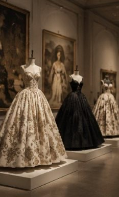
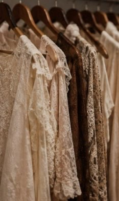
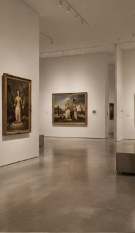
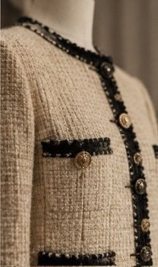
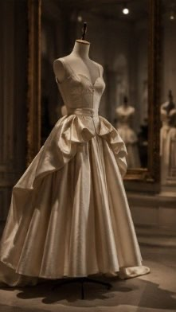
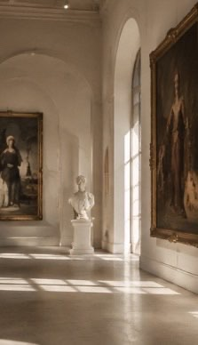
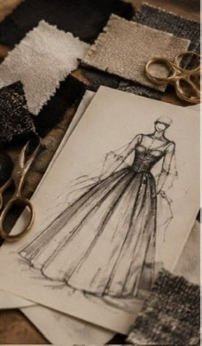

La beauté du geste
Couture & savoir-faire
MODE VINTAGE & ART · PARIS
Pièces de caractère, lignes intemporelles et regards singuliers. À Paris, FripMode fait dialoguer le patrimoine de la mode et la création artistique.
Découvrir la galerie
Des pièces à contempler. Des histoires à partager.
01 / LA GALERIE
Un espace de découverte où vêtements d'exception, accessoires et tableaux se répondent. Chaque pièce invite à ralentir, à observer et à porter un autre regard sur la mode.
Couture & savoir-faire
Accessoires & objets singuliers

Textures & héritage

Peintures & regards contemporains
02 / LES COLLECTIONS
Une sélection à contempler, en galerie.

L'élégance en héritage

La liberté d'une silhouette
L'art du détail

Des regards à découvrir

03 / L'ESPRIT FRIPMODE
À l'origine de FripMode, une conviction : le vêtement est bien plus qu'une silhouette. Il porte un geste, une sensibilité, une part de notre mémoire collective.
La fondatrice imagine la galerie comme un trait d'union entre sa passion pour le patrimoine de la mode et son amour de l'art. Son regard met en lumière les matières, les savoir-faire et les correspondances entre une pièce vintage et une œuvre.
Préserver le beau, éveiller la curiosité, faire vivre les histoires.
04 / RESTONS EN LIEN
Recevez nos regards sur la mode, les nouvelles sélections et les rendez-vous de la galerie.
En vous inscrivant, vous acceptez de recevoir les nouvelles de FripMode. Désinscription à tout moment. Vos données restent confidentielles.